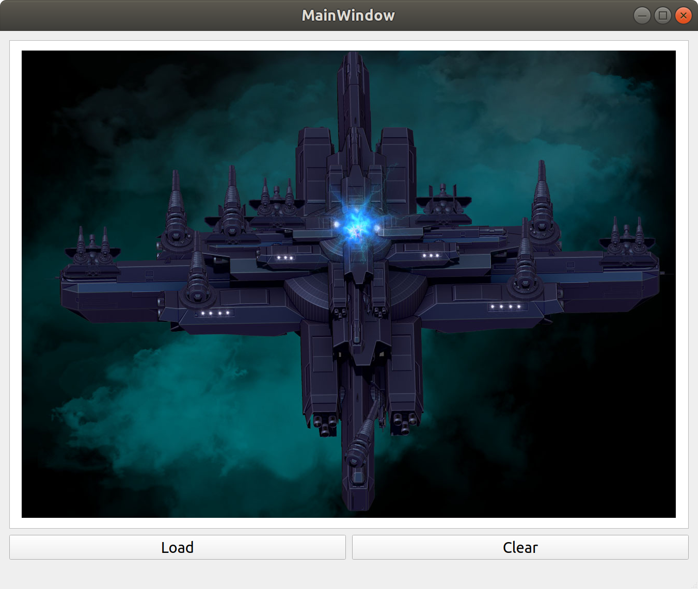

I have always thought that it is pretty fun to work on small toy games as a way to practice programming. The visual feedback when seeing something happen on screen after writing a bit of code is a good motivator, even if it doesn't turn out exactly as planned.
The source code for this blog post is available on Github and since it is written in QT there are autogenerated files (for example from the GUI editor) that I will not show in the blog, but can be found on Github then.
I am not very good at drawing. My wife is though... But I am not. So for now the experiments will be based on a bunch of resources I bought at Steam. These are "royalty free" packs of 2d graphics.
As I understand it, I am free to use these in for example any screenshots I post here, or any games I make. But I am of course not allowed to share the packs in their raw form with anyone else. Which is a bit odd because any resource used in a game could of course be extracted from there by a sufficiently sophisticated person, thus gaining access to the raw data. Will I then be of fault?
Feedback, hints, tips, questions, are all very welcome. I do not think that is hard for anyone that is motivated enough to look, to find my email address.
This first experimenting into the realm of "game" programming based on QT is a simple image viewer. The result looks like the picture below.

There are just two buttons, Load and Clear. The load button brings up a file dialog, selecting a file loads it and displays into a QGraphicsView. The clear button, does what is expected. The layout of the buttons and the QGraphicsView is created with the gui designed in Qt Creator.
The interesting code is located in the files mainwindow.h and mainwindow.cpp. There's only like 10 or so lines of hand-made code in total.
In mainwindow.h I added a mResourceDir variable that will hold the path to the directory where I have stored all those "royalty free graphics" that I linked to above. Other than that only the two "private slots" are interesting. These slots are functions that are called when the buttons are clicked. The rest is autogenerated by Qt Creator.
#ifndef MAINWINDOW_H
#define MAINWINDOW_H
#include <QMainWindow>
#include <QFileDialog>
#include <QDebug>
QT_BEGIN_NAMESPACE
namespace Ui { class MainWindow; }
QT_END_NAMESPACE
class MainWindow : public QMainWindow
{
Q_OBJECT
public:
MainWindow(QWidget *parent = nullptr);
~MainWindow();
private slots:
void on_loadPushButton_clicked();
void on_clearPushButton_clicked();
private:
Ui::MainWindow *ui;
QString mResourceDir;
};
#endif // MAINWINDOW_H
Now, the mainwindow.cpp file. First in the cpp there is a constructor that is called upon the creation of the mainwindow. This function just sets up the mResourceDir.
The userinterface, designed in the gui designer is accessible through the variable called ui. We'll see how this works later when accessing the QGraphicsView which is part of the user interface.
#include "mainwindow.h"
#include "ui_mainwindow.h"
MainWindow::MainWindow(QWidget *parent)
: QMainWindow(parent)
, ui(new Ui::MainWindow)
{
ui->setupUi(this);
/* Directory containing:
* Character Creator - Graphics Pack
* Indie Graphics Bundle
* Space Galaxy - Graphics Pack
*
* All avaialable from Steam at low price!
*/
mResourceDir = "../../../Resources";
}
MainWindow::~MainWindow()
{
delete ui;
}The code below is executed when the Load button is clicked. It opens up a file dialog with that displays "Load Image" in its header. It starts out with the mResourceDir directory opened and filters for images, png and jpg.
void MainWindow::on_loadPushButton_clicked()
{
QString filename = QFileDialog::getOpenFileName(this,
tr("Load Image"),
mResourceDir,
tr("Images (*.png *.jpg)"));
if (filename.isEmpty()) {
return;
}
QPixmap p(filename);
if (! ui->graphicsView->scene()) {
qDebug() << "No Scene!";
QGraphicsScene *scene = new QGraphicsScene(this);
ui->graphicsView->setScene(scene);
}
ui->graphicsView->scene()->addPixmap(p);
}If the returned filename string is empty, the method exits. If a file is selected, a pixmap is created QPixmap p(filename) which loads the image file.
Now, the graphicsView is made up out of something called "scenes" and if there is no active "scene" to display in one is created here.
The pixmap is then added to the scene.
The interplay between graphicsViews and scenes is something I need to study a bit to understand.
The code below is executed then the Clear button is clicked. If there is an active scene in the graphicsView, this scene is cleared!
void MainWindow::on_clearPushButton_clicked()
{
if (ui->graphicsView->scene()) {
ui->graphicsView->scene()->clear();
}
}There. That seems to be a simple image viewer! Much left to learn ;) small steps.
Any game needs graphics, so loading an image felt like a good start on that journey.
When going forward, though, there a lot of things that need figuring out. What is the best way to compose images to display in Qt? Is there a "pixel level" interface to make use of, or is the preferred way something higher level? What about animations? Are QTimers a good candidate for keeping track of when to switch frame?
Thanks for reading!
© Copyright 2020 Bo Joel Svensson
This page was generated using Pandoc.